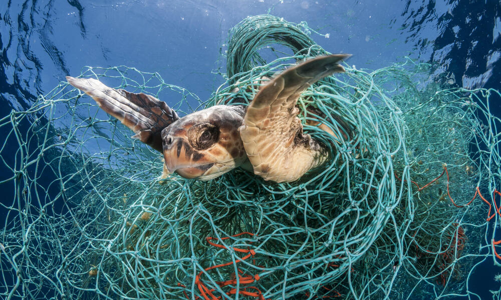

Over the course of their lengthy lives, sea turtles travel on land and at sea and swim thousands of kilometers in the ocean. They return to the same beaches where they gave birth to lay their eggs after waiting decades to reproduce. In one nesting season, females can lay hundreds of eggs, but only a small percentage of them will result in hatchlings that survive their first year. Sea turtles suffer other hazards brought on by people in addition to these enormous natural threats, including bycatch in commercial fishing gear, consumption, illicit trading, and climate change.
Due to the fact that they are frequently taken as inadvertent bycatch, sea turtles suffer from overfishing. Most of the time, they suffer injuries and pass away. Less sustainable fishing practices harm ecosystems and natural food chains, which can have an impact on sea turtles' surroundings. Ascension Bay in Curaçao, where there is a significant migration of Sargassum seaweed, is one place where we observe similar impacts. The seaweed is prospering because of the changes in habitats. Sargassum seaweed prevents any life underneath it from surviving. The sea turtles who enter it may fatigue and are unable to exit it due to this. They dry out and pass away under the hot sun.
Sea turtle survival may be impacted by habitat changes brought on by climate change. One of these elements is the temperature increase, which has an impact on a nest's temperature. While they are still in the eggs, hatchlings' gender is influenced by the temperature. More females are born as a result of higher temperatures. The survival of the species as a whole may be impacted by the overabundance of female sea turtles. Another danger is ocean pollution, which has contributed to a rise in fibropapilomatosis (tumor) instances in sea turtles, especially those in the area near Curaçao. Other long-term health problems in sea turtles may result from the rise in pollutants in the water.
One of the biggest dangers to marine turtles is pollution. They are unable to swim out for air because they become caught in phantom nets. Thus, they are suffocated. Additionally, they are susceptible to being caught in tiny fragments of nets and other floating debris. These might hurt them, cause limb loss, and cause other issues. Hooks dropped by fisherman have the potential to puncture their thick skin, become trapped, or even be ingested along with food. Sea turtles are greatly endangered by plastic pollution because they may confuse floating pieces of plastic for food. The sea turtles are unable to feed and correctly digest food because of the obstructions in their intestines and stomachs.
Turtle flesh and eggs are prized delicacies in some societies. Because sea turtles are endangered, it is forbidden to shoot or eat them. Nevertheless, they are frequently stolen. For their flesh, poached turtles are traded. The nests may be removed, and the eggs may be purchased and eaten.
Real estate investors may be drawn to the beaches that sea turtles select for their nests. To accommodate human'recreational' and entertainment activities, resorts are constructed, and beaches are modified. The number of beaches where sea turtles may nest decreases. Sea turtles can also be disturbed by bright lights, sunbeds, noise, campfires, and other human activity on beaches. Less eggs and hatchlings are produced as a result of fewer sea turtles being able to nest or complete nesting, which leads to a decline in the overall population.
One of the most crucial jobs for STCC and other conservation groups is educating people of all ages about sea turtles, their significance in the environment, and the risks they face. People's risky behavior, which is frequently brought on by ignorance, may be decreased with knowledge.
Fishermen that practice sustainable fishing are more likely to employ techniques that do not significantly impact our ecosystems.
Due to their propensity for staying near the surface, boat strikes are another frequent threat to sea turtles. Be cautious when boating to prevent running into any sea turtles that may be in the water. Additionally, stay away from anchoring near seagrass and coral reefs, which are crucial areas for sea turtle eating and resting.
Buying goods manufactured entirely of post-consumer plastic can assist to cut down on the quantity of plastic waste generated. As a result, there is less plastic in landfills and on beaches. Preferring products made of recycled plastic to those produced of virgin plastic might give used plastic more value, encouraging its reuse.
Any bright light can spook sea turtles, who lay their eggs and hatch their young at night. The risk of campfires "cooking" the eggs in a nest is there because the nest may not be seen from above the sand. Unintentionally lighting a fire above a nest can warm the sand there, killing any chance of the eggs surviving.
Endangering turtles can have significant consequences for both the turtles themselves and the broader ecosystem. Here are some of the main consequences:
| Discover | Comapany |
|---|---|
| Turtle Species | About us |
| Turtle Hatcheries | Contact |
| Threats to Turtle | |
| Support | |
| Educational Resources | Purchace and Donate |